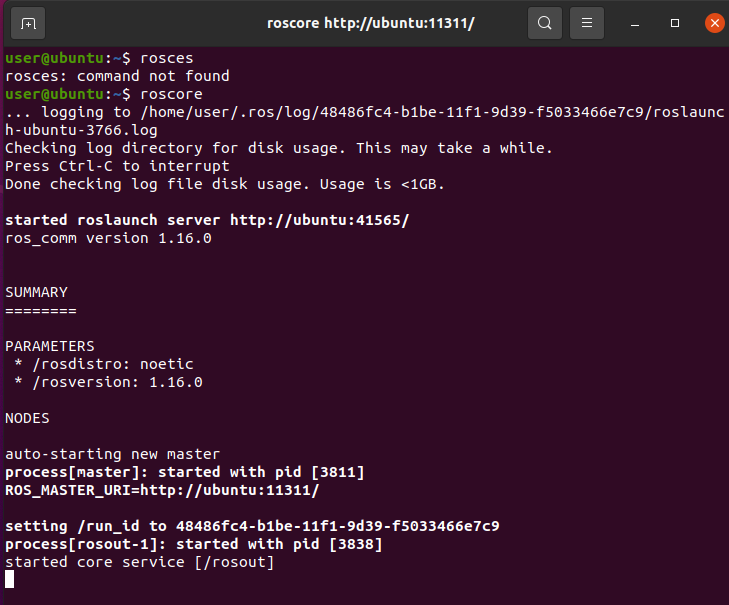
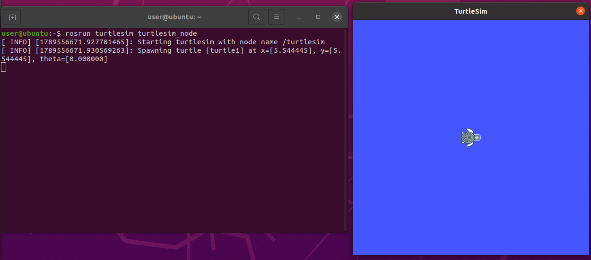
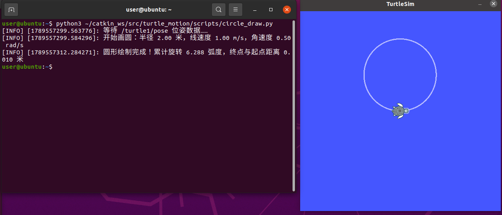

小海龟画圆实验
一、实验目的与环境说明
1.1 实验目的
- 掌握 ROS 话题通信机制：节点作为发布者向
/turtle1/cmd_vel话题发布geometry_msgs/Twist速度消息，同时作为订阅者接收/turtle1/pose话题的turtlesim/Pose位姿消息； - 掌握线速度和角速度的组合控制，理解圆周运动半径与速度的关系；
- 利用实时位姿反馈累计海龟的转角，当累计转角达到 2π 时自动停止；
- 通过 turtlesim 仿真器，让小海龟自主绘制一个半径约为 2 m 的完整圆形。
1.2 实验环境
| 项目 | 配置 |
|---|---|
| 操作系统 | Ubuntu 20.04（VMware 虚拟机） |
| ROS 发行版 | ROS Noetic |
| 仿真器 | turtlesim |
| 编程语言 | Python 3（rospy） |
| 功能包 | turtle_motion |
功能包目录结构如下：
turtle_motion/
├── package.xml # 包清单，声明 rospy、geometry_msgs 和 turtlesim 依赖
├── CMakeLists.txt # 编译配置，安装 Python 脚本
└── scripts/
└── circle_draw.py # 主程序：控制小海龟画圆二、核心控制原理与算法解析
2.1 ROS 话题通信
turtlesim 启动后，小海龟会订阅 /turtle1/cmd_vel 话题。本实验编写的 turtle_circle_node 向该话题发布 Twist 消息，控制小海龟的线速度和角速度。
同时，节点订阅 /turtle1/pose 话题，实时获取小海龟的位姿：
x、y：小海龟在平面中的坐标；theta：小海龟的朝向角，取值范围为 [−π, π]。
Twist 消息中使用两个分量：
linear.x：前进线速度，单位为 m/s；angular.z：绕 z 轴旋转的角速度，单位为 rad/s。正值表示逆时针旋转，负值表示顺时针旋转。
控制循环使用 rospy.Rate(50) 以 50 Hz 持续发布速度指令，避免超过 0.5 秒没有新速度消息时，turtlesim 看门狗自动将小海龟停下。
2.2 圆周运动原理
当小海龟同时具有非零线速度 v 和非零角速度 ω 时，它会沿圆弧运动。圆的半径为：
R = |v| / |ω|
本实验设置：
v = 1.0 m/s，ω = 0.5 rad/s
因此理论圆半径为：
R = 1.0 / 0.5 = 2.0 m
完成一圈需要累计旋转 2π 弧度，理论运动时间为：
T = 2π / |ω| = 2π / 0.5 ≈ 12.57 s
2.3 闭环转角累计
如果只让节点按照理论时间运行，实际速度误差会导致圆形不能准确闭合。因此，本实验订阅 /turtle1/pose，对相邻两帧位姿的朝向角变化量进行累加。
每个控制周期的角度变化量为：
Δθ = θ_current − θ_previous
由于 theta 的取值范围为 [−π, π]，当角度跨越 π 或 −π 时会出现数值跳变。程序使用 normalize_angle() 将每次角度差归一化到 [−π, π]，然后再累加。当累计转角达到 2π 时，立即发布零速度停车。
2.4 算法流程
- 初始化
turtle_circle_node节点； - 创建
/turtle1/cmd_vel发布者和/turtle1/pose订阅者； - 等待第一帧位姿数据，记录起点坐标与初始朝向角；
- 以 50 Hz 频率同时发布线速度和角速度；
- 实时计算相邻位姿消息的角度差，归一化后累加；
- 累计转角达到 2π 后发布零速度；
- 计算终点与起点之间的距离，作为圆形闭合误差；
- 通过
rospy.on_shutdown()、try/except/finally保证节点中断时小海龟也能安全停下。
三、完整源码展示
3.1 主程序 scripts/circle_draw.py
#!/usr/bin/env python3
# -*- coding: utf-8 -*-
"""ROS turtlesim 小海龟画圆节点（闭环位姿反馈版）。"""
import math
import rospy
from geometry_msgs.msg import Twist
from turtlesim.msg import Pose
class CircleDrawer:
"""持续发布线速度和角速度，让小海龟精确绘制一个完整的圆。"""
def __init__(self):
rospy.init_node("turtle_circle_node")
self.pub = rospy.Publisher("/turtle1/cmd_vel", Twist, queue_size=10)
self.pose = None
rospy.Subscriber("/turtle1/pose", Pose, self.pose_callback)
self.rate = rospy.Rate(50)
# 圆半径 R = v / w = 1.0 / 0.5 = 2.0 m
self.linear_speed = 1.0
self.angular_speed = 0.5
self.target_angle = 2 * math.pi
rospy.on_shutdown(self.stop)
def pose_callback(self, msg):
"""保存小海龟的最新位姿。"""
self.pose = msg
def publish_velocity(self, linear=0.0, angular=0.0):
"""组装并发布速度指令。"""
twist = Twist()
twist.linear.x = linear
twist.angular.z = angular
self.pub.publish(twist)
def wait_for_pose(self):
"""等待第一帧位姿数据。"""
while self.pose is None and not rospy.is_shutdown():
rospy.loginfo_throttle(1.0, "等待 /turtle1/pose 位姿数据...")
self.rate.sleep()
@staticmethod
def normalize_angle(angle):
"""将角度差归一化到 [-pi, pi]。"""
while angle > math.pi:
angle -= 2 * math.pi
while angle < -math.pi:
angle += 2 * math.pi
return angle
def stop(self):
"""发布全零速度，让小海龟停下。"""
self.publish_velocity()
def draw_circle(self):
"""根据实时朝向角累计旋转量，达到 2π 后停止。"""
self.wait_for_pose()
if rospy.is_shutdown():
return
start_x = self.pose.x
start_y = self.pose.y
previous_theta = self.pose.theta
total_angle = 0.0
direction = 1.0 if self.angular_speed >= 0.0 else -1.0
radius = abs(self.linear_speed / self.angular_speed)
rospy.loginfo(
"开始画圆：半径 %.2f 米，线速度 %.2f m/s，角速度 %.2f rad/s",
radius,
self.linear_speed,
self.angular_speed,
)
while total_angle < self.target_angle and not rospy.is_shutdown():
# 线速度和角速度同时不为零时，小海龟沿圆弧运动
self.publish_velocity(self.linear_speed, self.angular_speed)
self.rate.sleep()
current_theta = self.pose.theta
delta = self.normalize_angle(current_theta - previous_theta)
previous_theta = current_theta
# 只累计期望方向上的角度变化
total_angle += max(0.0, direction * delta)
self.stop()
endpoint_error = math.hypot(
self.pose.x - start_x,
self.pose.y - start_y,
)
rospy.loginfo(
"圆形绘制完成！累计旋转 %.3f 弧度，终点与起点距离 %.3f 米",
total_angle,
endpoint_error,
)
if __name__ == "__main__":
node = CircleDrawer()
try:
node.draw_circle()
except rospy.ROSInterruptException:
rospy.loginfo("节点被中断，让小海龟停下来")
finally:
node.stop()3.2 构建文件 CMakeLists.txt
cmake_minimum_required(VERSION 3.0.2)
project(turtle_motion)
find_package(catkin REQUIRED COMPONENTS
rospy
geometry_msgs
turtlesim
)
catkin_package()
catkin_install_python(PROGRAMS
scripts/circle_draw.py
DESTINATION ${CATKIN_PACKAGE_BIN_DESTINATION}
)如果功能包中已有 square_draw.py，可以将两个脚本一起安装：
catkin_install_python(PROGRAMS
scripts/square_draw.py
scripts/circle_draw.py
DESTINATION ${CATKIN_PACKAGE_BIN_DESTINATION}
)3.3 包清单 package.xml
<?xml version="1.0"?>
<!-- turtle_motion 功能包：小海龟自主绘制圆形轨迹 -->
<package format="2">
<name>turtle_motion</name>
<version>0.0.0</version>
<description>turtle_motion: 小海龟自主绘制圆形轨迹功能包</description>
<maintainer email="your_email@example.com">your_name</maintainer>
<license>TODO</license>
<buildtool_depend>catkin</buildtool_depend>
<build_depend>rospy</build_depend>
<build_depend>geometry_msgs</build_depend>
<build_depend>turtlesim</build_depend>
<exec_depend>rospy</exec_depend>
<exec_depend>geometry_msgs</exec_depend>
<exec_depend>turtlesim</exec_depend>
<export>
</export>
</package>四、运行与验证
4.1 编译功能包
将 turtle_motion 功能包放入 Catkin 工作空间的 src 目录，然后执行：
chmod +x ~/catkin_ws/src/turtle_motion/scripts/circle_draw.py
cd ~/catkin_ws
catkin_make
source devel/setup.bash4.2 启动节点
需要打开三个终端。
终端 1：启动 ROS 主节点。
roscoreROS 主节点启动成功后，终端会显示 started core service [/rosout]。

终端 2：启动 turtlesim 仿真器。
rosrun turtlesim turtlesim_node启动成功后，屏幕上会出现 TurtleSim 窗口和初始小海龟。

终端 3：运行画圆节点。
source ~/catkin_ws/devel/setup.bash
rosrun turtle_motion circle_draw.py4.3 话题和节点验证
可以另开终端执行以下命令：
rostopic list
rostopic info /turtle1/cmd_vel
rostopic info /turtle1/pose
rostopic echo /turtle1/cmd_vel
rostopic echo /turtle1/pose
rosnode listrostopic echo /turtle1/cmd_vel 的主要输出如下：
linear:
x: 1.0
y: 0.0
z: 0.0
angular:
x: 0.0
y: 0.0
z: 0.5
---这表明小海龟在持续前进的同时向左旋转，因此会形成逆时针圆形轨迹。
4.4 预期结果
节点运行后，小海龟以 1.0 m/s 的线速度和 0.5 rad/s 的角速度逆时针运动，绘制一个半径约为 2 m 的圆。
当累计转角达到 2π 弧度后，节点立即发布零速度使小海龟停下。终端会输出类似日志：
开始画圆：半径 2.00 米，线速度 1.00 m/s，角速度 0.50 rad/s
圆形绘制完成！累计旋转 6.28x 弧度，终点与起点距离 0.xxx 米由于 turtlesim 的采样周期和停车延迟，实际轨迹可能存在轻微的闭合误差，属于正常现象。

五、参数调整
通过修改线速度和角速度，可以改变圆的大小和运动方向。
| 参数设置 | 运动效果 |
|---|---|
linear_speed = 1.0，angular_speed = 0.5 |
逆时针画半径 2 m 的圆 |
linear_speed = 1.0，angular_speed = 1.0 |
逆时针画半径 1 m 的圆 |
linear_speed = 0.5，angular_speed = 0.5 |
逆时针画半径 1 m 的圆 |
linear_speed = 1.0，angular_speed = -0.5 |
顺时针画半径 2 m 的圆 |
注意：angular_speed 不能为 0，否则小海龟只会直线前进，且程序在计算半径时会出现除零错误。
六、总结
本实验通过向 /turtle1/cmd_vel 话题同时发布线速度和角速度，实现了小海龟的圆周运动。程序订阅 /turtle1/pose 话题获取实时朝向角，对跨越 ±π 边界的角度差进行归一化和累加，当累计旋转量达到 2π 时自动停车。
通过本实验，可以掌握 ROS 话题的发布与订阅、Twist 速度消息的使用、圆周运动的速度关系，以及利用位姿反馈实现闭环终止判断的基本方法。